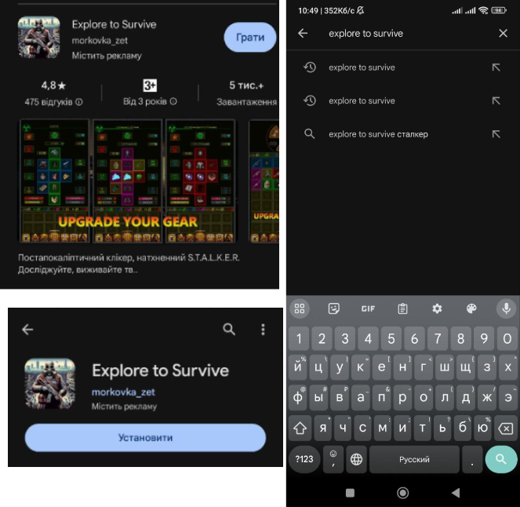

Де завантажити гру?
Ви можете завантажити нашу гру через Play Маркет. Просто зайдіть до Play Маркет на своєму пристрої, введіть назву гри та завантажте. Або перейдіть за цим посиланням і завантажте гру.
На майбутнє, перед обновленням не забувайте перевіряти, чи можна його обновлювати. А то що буде, якщо оновите, зайдете втратите прогрес, а потім опинеться, що давно було сказано не оновлювати гру через страшну помилку. Краще перестрахуватись:)

Взломана версія гри
Взлом гри не можливий через захист Unity:
- 1. Захист від модифікацій: Unity надає можливість обмежити доступ до внутрішніх компонентів гри, запобігаючи недозволеній модифікації коду або ресурсів.
- 2. Шифрування ресурсів: Unity дозволяє зашифровувати ігрові ресурси, Що робить їх важкодоступними для незаконних спроб.
- 3. Анти-шахрайські заходи: Unity має вбудовані функції, які допомагають уникнути підробок та шахрайських дій в грі.
Система промокдів, та які є промокоди в ETS?
Система промокодів - це захоплююча можливість для вас отримати ексклюзивні предмети, бонуси чи інші цінності у грі. Промокоди є унікальними кодами, які можна ввести у спеціальне поле, щоб отримати певну нагороду.
В грі є декілька публічних промокодів:
- 1.QQQ
- 2.ARTF
- 3.Kovbaska